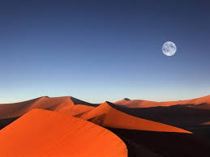
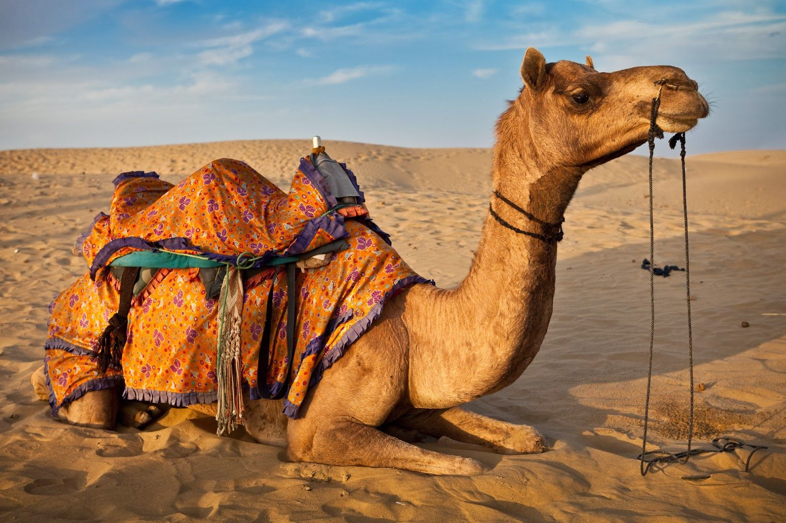
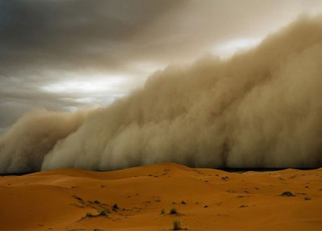

介绍
Different deserts have different beautiful landscapes. There are various deserts in the world. Some of them make you uneasy, some of them make you marvel, and some of them make you addicted to them. Now let's enjoy the beautiful scenery of different deserts!

动物
Desert animal refers to animals living in the desert. It has its own moisture retention. And the ability to resist high temperatures and the morphological characteristics of adapting to desert life.
植物
Desert plants generally refer to plants that can survive in desert environment. Compared with most other barren areas, the plants here always give people a special feeling in the desert with harsh environment and few people to visit. You have to believe that there is no life on earth that is more tenacious and magnificent than them.
